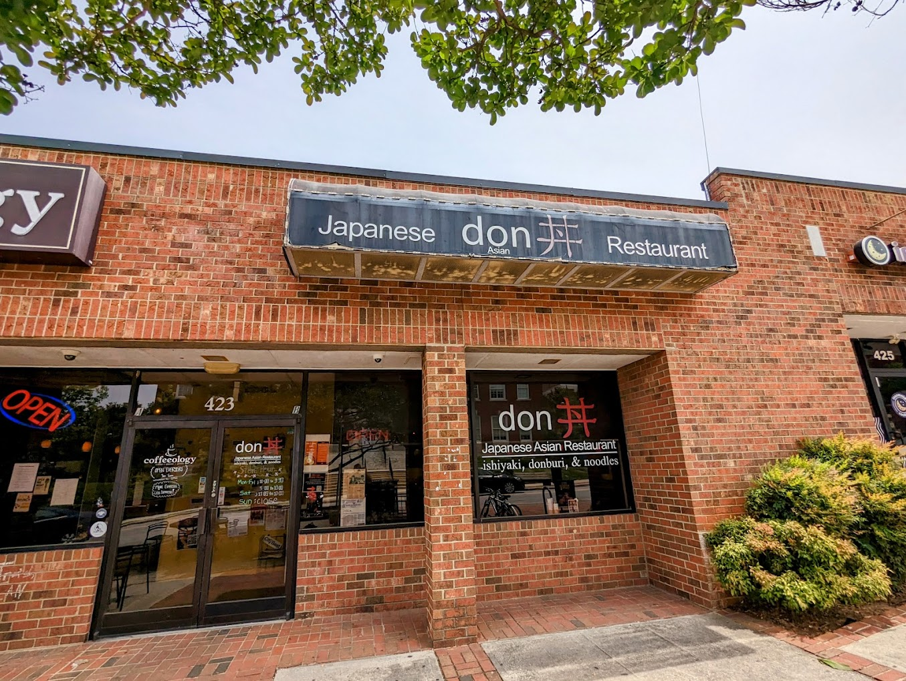

Are you growing tired of visiting the cafe everyday? Looking for the perfect lunch or dinner spot within walking distance of campus? Well look no further! Here at Spartan Food Finder, we bring you a weekly catalog of various food & drink recommendations. Visit our meal plan builder to help you plan out some meals for the week!